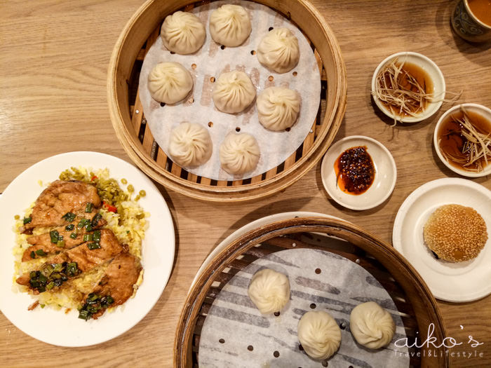

小富豐蘇杭湯包
google評價：4.0★
店家資訊
地址：新北市新店區大豐路77號
營業時間：早上11:00至下午2:00，下午5:00至晚上8:30，週日休息
店家電話：02-8919-3340

推薦菜單
蘇杭鮮肉湯包110元 蝦仁鮮肉蒸餃115元
大捲餅牛肉105元 蔥油餅40元 木需炒餅90元
清蒸臭豆腐100元 豬肉餡餅80元 相思小包60元
雪菜肉絲麵75元 酸辣湯麵70元 乾拌麵40元
顧客評論
首先他的小菜夾取方法很特別，他會給一個盤子，你能裝多少就裝，可以每種都夾到，一盤35元。湯包一籠110，有8顆，皮薄湯餡鮮，要趁熱吃，冷掉就不好吃了。此外也推薦大捲餅牛肉，採用大餅和蔥油餅的方法去製作，煎完有焦酥的口感，但也不會太油或太膩，帶有一點筋性和厚度，嚼起來很香。